现在开始 Pro Git 读书笔记: www.git-scm.com
从最最基础的使用开始，一步步探究Git的秘密。
- 安装
- 配置(config)
- 创建仓库(Init / clone)
- 添加文件(add)
- 提交文件(commit)
- 抓取别人的更新(fetch / pull)
- 推送自己的更新(push)
- 分支(branch)
- 移除文件(remove)
- 移动/重命名文件(move)
安装
如果你是第一次使用git，或者你的PC设备上从没有使用过git，那么你需要安装它.
从 http://www.git-scm.com/downloads 可以下载到你所需要的安装包，其中提供 Mac OS X/Windows/Linux/Solaris平台 .选择你需要的下载.
http://www.git-scm.com/book/en/v2/Getting-Started-Installing-Git 告诉你如何去安装git.
配置 - $ git config
Git 安装完成之后，我们就可以运行 Git Bash 开始使用Git了，不过再此之前，为了让Git更友好的配合我们的工作，对Git进行一些简单的配置是很有必要的。
用 $ git config 命令对 Git 进行配置。在执行 $ git config 命令的时候，实际上是修改了git config文件的内容，所以我们也可以直接编辑git config文件达到同样的目的。
git config文件存放在三个地方：
- /etc/gitconfig 文件: 系统级别的配置，对所有用户都适用，用 $ git config --system 命令编辑。
- ~/.gitconfig 文件: 用户级别配置，存在于每个用户的主目录内，对当前用户适用，用 $ git config --global 命令编辑。
- 工作目录中.git/config文件: 项目级的配置，仅针对当前项目适用，用 $ git config --local 命令编辑,其中 --local 是可以不写的哦。
每一个级别的配置会覆盖上层的相同配置，所以.git/config 优于 ~/.gitconfig 优于 /etc/gitconfig 被应用。
我们已经知道了 $ git config 命令，那么下面就试试它的作用好了。
按照惯例，多人协作时首先要让别人知道我们，那么用户名称和邮件地址是一个很重要的信息，这也是我们开始Git最开始要设置的信息。
- $ git config --global user.name "User Name" 用户名设置成了"User Name"，可以替换成你自己的name哦。
- $ git config --global user.email useremail@example.com 邮箱设置成了"useremail@example.com"，可以替换成你自己的email哦。
上面用了 $ git config --global 命令修改的是用户级别的配置，所以当前用户的所有项目都可以使用相同的name和email了。
到此为止，我们几乎就算是完成了Git的最基本的配置，也就是name和email，当然，git 还可以配置其他信息，例如文本编辑器 $ git config --global core.editor ，差异分析工具 $ git config --global merge.tool 等，其配置方法是一样的。
现在让我们用 $ git config -l 命令查看一下我们用例那些配置。
还可以使用 $ git help config 或 $ git config --help 命令查看更详细的帮助。
创建仓库 Init Repository - $ git init $ git clone [url] $ ssh-keygen -t rsa
现在，我们已经安装了Git，并已经配置了我们的Name和Email，接下来我们要创建一个仓库(Repository)。
有两种方法可以创建一个Git Repository。
方法1：使用 $ git init 命令，将本地目录初始化成git 仓库。
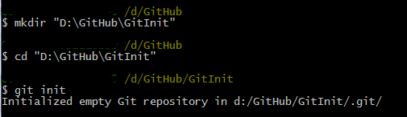- 第一条命令：在D:\GitHub目录下创建了GitInit文件夹，也可以自己手工创建。
- 第二条命令：跳转到GitInit目录.
- 第三条命令：将GitInit目录初始化成一个Git仓库.实际上是在GitInit目录下创建了一个.git文件夹。
仓库创建完成，第一个方法就是这么简单，其作用是将自己本地的文件夹初始化成Git仓库，此时的Git仓库已经可以管理项目文件啦。
方法2：使用 $ git clone [url] 命令，将现有的仓库克隆到本地。
再使用 $ git clone [url] 命令克隆一个现有的仓库（一般是指远程仓库）之前，我们应该知道，大多数Git服务器使用SSH公钥来授权，为了得到授权，所以我们需要一个公钥(public key).
检查一下在你的PC上是否已经有了公钥,一般存放在账户主目录下的.ssh资料夹里，看一下有没有.pub文件，就像 id_rsa.pub这样.
- $ cd ~/.ssh 进入账户主目录下的.ssh文件夹。
- $ ls 显示资料夹里所有的文件。
如果没有.ssh资料夹，或者资料夹里没有.pub文件，那么你需要使用ssh-keygen创建一个公钥。
- $ ssh-keygen -t rsa 在.ssh资料夹里创建一个id_rsa.pub和一个id_rsa文件，id_rsa.pub里面放的就是你的public key啦，id_rsa文件放的是你的私钥。 -t rsa 指定了要创建的密钥类型是RSA(SSH-2)，其他的还可以是rsa1(SSH-1)或者dsa(SSH-2).
- $ cat id_rsa.pub 查看一下public key的内容。
以上，我们就有了自己的 SSH 公钥，把公钥的内容复制给Git 管理员，或者我们自己将public key放到Git Server里，举例说明：
- 登录你的github.com，假设你已经注册了GitHub账户.
- 点击页面右上角的Settings按纽，进入https://github.com/settings/profile。
- 点击页面左侧的SSH keys菜单，进入https://github.com/settings/ssh。
- 点击页面右侧的Add SSH key按纽，将你的 public key 粘帖进 key 文本框，点击下面的Add ley按纽。完成:)
这样，我们就已经取得了 Git 服务器(GitHub)远程仓库的授权。下面我们就可以运行 $ git clone [url] 命令克隆远程仓库了。
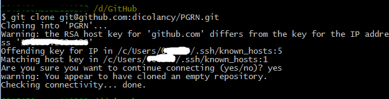- 上面把"git@github.com:dicolancy/PGRN.git"仓库克隆到了本地。
- 你会发现在D:\GitHub目录下多了一个叫做PGRN的文件夹，PGRN文件夹里就是你clone到的仓库。
- 如果你不喜欢PGRN这个名字，只需要在命令后面加上你希望的文件夹名就可以了,就像这样 $ git clone git@github.com:dicolancy/PGRN.git myFolderName 。
这样，我们就有了自己工作的仓库啦，简单吧:)
但是，我们的仓库还只能自己玩，无法与别人协同工作，因为我们还没有与远程仓库关联起来。
远程仓库是指托管在网络上的项目仓库，其实和我们本地init来的仓库没有什么不同，只是被放在一个大家都方便访问地方，方便小伙伴们分享和抓取数据。有些远程仓库你只能读，有些你可以写。我们若想看别人的代码就可以从远程仓库抓取，若想分享自己的代码则把自己的code推送到远程仓库即可。
默认情况下，使用方法2 clone 来的仓库默认与远程仓库建立了一个关联，用origin作为远程仓库的别名，可以使用 $ git remote -v 命令查看远程仓库地址：
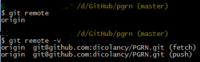每一个本地仓库可以和N多个远程仓库建立关系，用 $ git remote add [repositoryname] [url] 命令添加远程仓库：
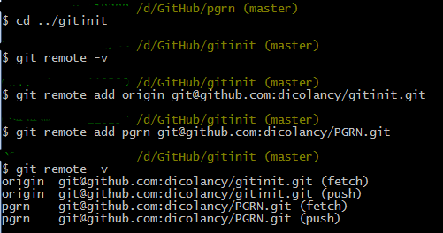现在我们的本地仓库已经与分别与远程的gitinit仓库和pgrn仓库建立了关系，为后续的拉取数据(fetch)和 推送数据(push) 准备了条件。
添加文件 (编写自己的code)- $ git add
现在我们已经有了Git仓库，可以在这个仓库上面愉快的写代码了。
在开始编写文件之前，可以用 $ git status 命令检查一下仓库的状态:
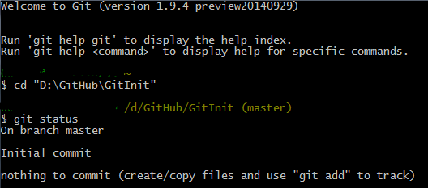仓库里空空如也，啥都没有。
现在项目里新加一个文件a.txt，可以用 $ touch a.txt 命令创建文件，也可以手工创建。
再次用 $ git status 命令检查一下仓库的状态：
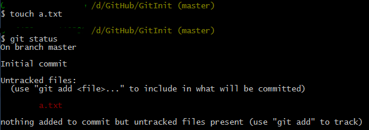可以看到，Git告诉我们在工作区内有未受管控(untracked)的文件a.txt,并提示我们用 $ git add [filename] 命令将a.txt文件纳入管控中。
现在我们用 $ git add a.txt 命令将a.txt纳入Git管控，并再次查看Git状态：
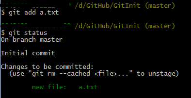Git告诉我们，现在有一个新文件被纳入管控，等待提交(commit),并提示我们用 $ git rm --cached [filename] 命令将文件从暂存区删除(unstage)。
我们当然不会将a.txt文件移掉，而且还要编辑它，给它新增一行内容“please don't remove me, please! :(”，然后再查看一下Git状态：
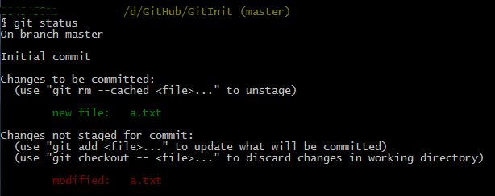我们可以看到，Git首先告诉我们有一个新文件a.txt被纳入管控，等待提交(commit)，这与上一次告诉我们的信息一样, 然后又告诉我们a.txt被修改过，但是并未受管控(not staged)， 而且提示我们用 $ git add [filename] 命令将文件纳入管控以便提交， 或者用 $ git checnkout -- [filename] 命令覆盖掉工作区的改变。
见鬼了，我们在刚才添加a.txt文件之后已经使用 $ git add a.txt 命令将a.txt文件纳入管控了, 为什么这次又提示我们再add一次呢，而且竟然出现了两个a.txt，一个已管控(已暂存staged)，一个未管控(未暂存not staged)?
实际上，Git并不保存文件的前后差异，Git将一个文件纳入管控的过程，就是将这个文件快照放入暂存区(staged)的过程(实际上是将快照实体放进了仓库，而将快照的索引tree放到了暂存区(Index文件))， 每运行一次 $ git add [filename] 命令Git就将这个文件在工作区的状态做一次快照，并放入暂存区. 第一次add时，git将a.txt文件未修改之前的快照存入了暂存区，修改之后，工作区a.txt文件已经与暂存区的那个a.txt不一样了， 所以需要再次add，所以我们在上面看到了两个a.txt,绿色的那个表示已被管控,指的是在暂存区的那个未被修改过的版本，而红色的那个则是还没有被管控的修改后的版本。
更加详细的过程，我们会在后面详细探讨，而现在我们只要知道每次文件被重新修改过后，都要重新 $ git add 。
现在我们再次用 $ git add a.txt 命令将修改后的a.txt纳入Git管控，并再次查看Git状态：
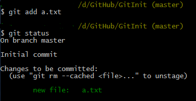是否发现，这一次的status信息里只有了一个绿色的a.txt文件？几乎和第一次add后的status一样有木有？
难道是第二次add没有成功？是不是a.txt文件的内容没有被改变？我们用 $ cat a.txt 命令来查看一下就知晓:
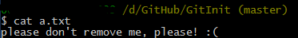我们可以看到，a.txt文件是被修改过的版本，那么说明，第二次add之后,git 把暂存区里的a.txt文件快照替换成了新的版本了。
提交文件 - $ git commit
使用 $ git add [filename] 命令，我们已经把所有工作区里的文件都放到了暂存区里，是时候提交(commit)了。
请注意，这里的提交可不是提交给你的team leader，而是提交给Git，因为Git必须通过提交(commit)来组织管理暂存区里的文件快照。 add只是将文件快照存入暂存区，但是这一组快照还没有名气，等于是刚入行的小野模，而commit则是这一组快照的经纪人，有了commit的快照才能更加闪耀动人。
使用 $ git commit 命令将暂存区里所有的内容一次提交，这时界面会变成这样：
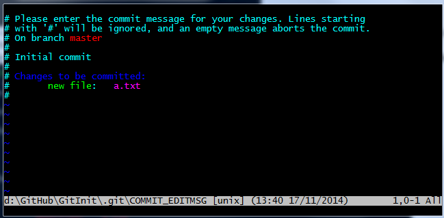上面，Git是在让我们为这次的commit输入说明，说明这次commit做了什么，#号后面的都是注释。
i键进入编辑模式，输入"first commit",然后Esc键，输入:wq,然后Enter键，自动回到Git Bash界面：
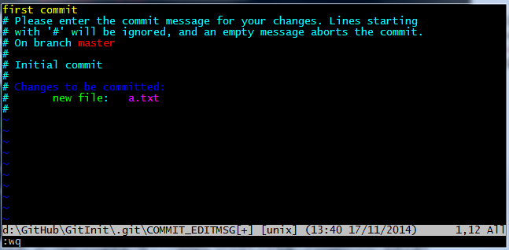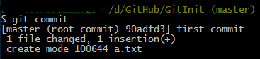Git告诉我们这次提交的分支(master),是第一次提交(root-commit)，commitid(90adfd3，完整的commitid是一个40个十六进制字符组成的SHA-1哈希值)和说明(first commit)，一个文本文件被添加(100644是文件模式代码，表示普通文件)等信息.
完成了提交，再来看一下此时Git的状态：
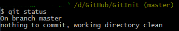Git告诉我们，此时我们的工作区和暂存区都非常的干净，所有的内容都已经提交到了Git仓库。
现在我们在a.txt文件里再写入一行"Thanks!",再来看一下此时Git的状态：
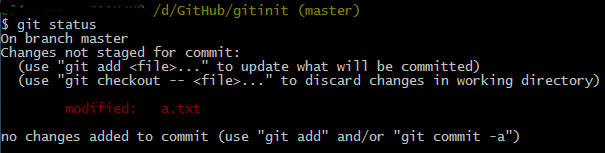现在我想把这次的修改提交，可是每次提交都要先add，然后再在新窗口里写说明很麻烦是不是？
有一个更方便的方法，使用 $ git commit -a -m "second commit" 命令：
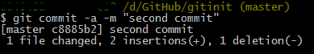提交成功！ -a 选项让Git在commit的时候自动将工作区里的被修改的文件快照暂存从而跳过add步骤， -m 选项告诉Git后面跟着的字符串就是说明信息，所以不用在进入说明编辑的模式了。
抓取别人的更新 - $ git fetch $ git pull
请注意，以上的所有操作中，除了clone远程仓库 $ git clone 外，所有操作都是在本地进行的，而且是不需要联网的，也就是说别人是无法看到我们库里的内容的。
如果你想看一下远程仓库中别人提交的更新内容，可以使用 $ git fetch [remote-name] 命令抓取远程仓库的内容。
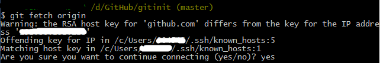除了 $ git fetch [remote-name] 命令外， $ git pull 命令也可以抓取远程仓库的内容， 与 $ git fetch 不同的是， $ git fetch 只下载远程仓库的内容，但是并不会与本地内容合并(merge)， $ git pull 命令不仅抓取远程仓库的内容，而且会自动与本地内容进行合并(merge).
推送自己的更新 - $ git push
现在我们的工作已经完成了，并已经全部提交(commit)给了本地的Git仓库，想要分享一下自己的工作成果，就要手工的把自己的库推送到远程仓库去。
再推送之前，必须保证已经将远程仓库的内容更新到了本地，所以在推送之前需要用 $ git fetch 命令先抓取远程仓库的数据并做一次合并。
使用 $ git push [remote-name] [branch-name] 将本地的分支推送到远程服务器：
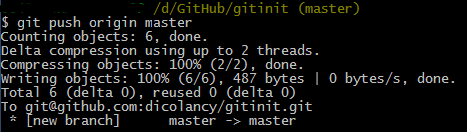推送成功，现在小伙伴们可以使用 $ git fetch 命令获取你库里的数据了。
分支 - $ git branch
我们已经推送了一个版本到远程仓库，现在我们新建一个b.txt文件。
我们正在编写b.txt文件，这时想要在a.txt文件里加入一段话并推送到远程仓库，可是又不想和未编写完的b.txt一起推送上去，这时候可以使用Git的分支(Branch)功能。
我们默认在master分支中工作，所以master一般作为主分支使用，使用 $ git branch 命令可以查看所有分支。
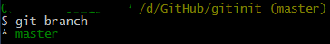* 号表示当前工作所在的分支。
使用 $ git branch [branch-name] 创建分支：
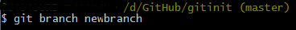然后提交当前分支，再切换到newbranch分支,使用 $ git checkout [branch-name] 切换分支,然后使用 $ ls 命令查看工作区的文件：
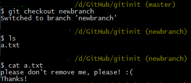$ ls 命令显示了当前分支(现在所在的分支是newbranch)工作区的文件，只有a.txt文件,没有b.txt文件。
编辑a.txt文件，并提交：
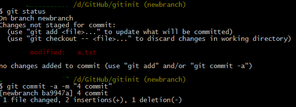将本地的newbranch推送到远程仓库的master分支：
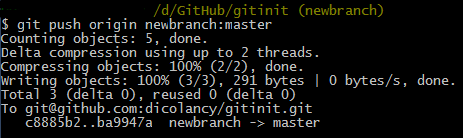这样，最新版本的a.txt文件已经推送到了远程仓库，而b.txt并没有影响。现在可以切换回到master分支继续b.txt的编写：
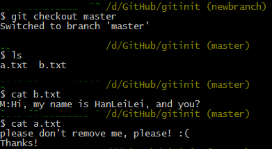我们查看b.txt和a.txt文件的内容时候发现,b.txt文件并没有受到newbranchd的影响.
而a.txt文件也没有第三行，现在我想把newbranch分支里对a.txt文件所作的修改合并(merge)到master分支的a.txt文件中来,使用 $ git merge [branch-name] 命令合并分支：
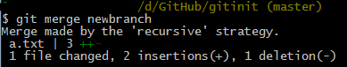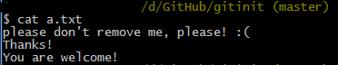现在newbranch分支里对a.txt文件的修改已经合并到了master分支里，a.txt文件里也多出了第三行。
查看一下现在有哪些分支：
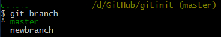现在有了master分支和newbranch分支，其中master分支是当前所在分支，newbranch已经没用了，把它删掉，用 $ git branch -d [branch-name] 命令,再次查看一下有哪些分支：
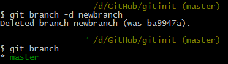现在只剩下了master分支。
等b.txt编写完成后提交，并推送远程仓库，那么今天的工作就完成了 。
移除文件 - $ rm [file-name] $ git rm [file-name]
现在我们在工作目录中新增一个c.txt文件。如果我们想移除c.txt文件，那么在不同的状态下有不同的移除方法。
- c.txt文件还没有添加到暂存区，即不使用 $ git add [file-name] 命令，此时若想删除c.txt文件只需运行 $ rm c.txt 命令即可。
-
c.txt文件已经添加进暂存区，即已经使用了
$ git add [file-name]
命令，此时若只将c.txt文件从暂存区移除，则运行
$ git rm --cached c.txt
命令即可：
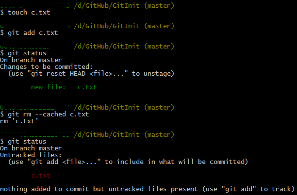
此时c.txt文件还在，只是回到了使用 $ git add [file-name] 命令之前的状态，即c.txt已被移除出了暂存区。这时只要在运行 $ rm c.txt 命令即可将c.txt彻底删除。 -
c.txt文件已经添加进暂存区，即已经使用了
$ git add [file-name]
命令，此时若要将c.txt彻底删除，即同时从暂存区和工作区删除，可以先运行
$ rm c.txt
命令，再运行
$ git rm c.txt
命令即可。
除此以外，还可以使用 $ git rm -f c.txt 命令强制删除，以达到同样的效果。直接使用 $ git rm c.txt 命令是行不通的哦。 - 如果c.txt文件已经被commit，并且push到了远程仓库，那么只要在本地将c.txt文件删除后做一次提交，然后把提交后的commit推送到远程仓库就可以把远程仓库里的c.txt文件也删除了。
-
需要注意的是，对于已经被commit过的文件，
$ git rm
命令只是移除了之后的commit里对此文件的引用，而在历史的commit里这个文件还是存在的，而且文件的快照也并没有从仓库里彻底移除，
若要从仓库中将这个文件的快照也移除掉，那么需要在移除快照之前，将提交历史中所有引用过这个文件的commit里对这个文件的引用移除掉，然后使用 $ git prune 命令(此命令是移除所有没有被引用的对象)，详细方法我们后面详谈。
移动/重命名文件 - $ mv [file-name] [newfile-name] $ git mv [from-file-name] [to-file-name]
如果要将文件从一个地方移动到另一个地方，或者重命名，可以使用 $ git mv [from-file-name] [to-file-name] 命令，对已经暂存过的文件有效，如果没有暂存的文件，用 $ mv [from-file-name] [to-file-name] 命令就可以了。
$ git mv [from-file-name] [to-file-name] 命令的效果，等效于 $ mv [from-file-name] [to-file-name] + $ git rm [from-file-name] + $ git add [to-file-name] 3条命令的效果。
$ git config
$ git config 用于设置Git的配置信， 实际上是修改了Git的 config文件 内容， 所以也可以通过记事本直接编辑config文件达到相同的效果。
查看一下项目级配置文件里的内容：
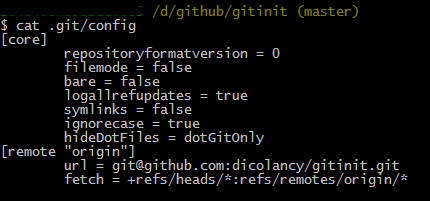上图可以看到config文件里的配置格式(三级配置文件格式相同),其中"[core]"和"[remote "origin"]"称为"section", 每一个section下面有"key=value"键值对,"section.key"就组成了一个完整的变量名variable-name。
$ git config 命令的效果便是添加/删除/修改config文件里的这些seciont,key,value
- -l 或者 --list 查看配置信息, $ git config -l 查看所有config信息,包括三级配置的所有内容，按照配置应用范围大小从上倒下排序：系统级-用户级-项目级。
- --system , --global , --local 分别表示系统级(Git安装目录/etc/gitconfig)配置，用户级(~/gitconfig)配置和项目级(项目目录/.git/config)配置。 $ git config -l --local 查看当前项目的项目级配置.
- [variable-name] [variable-value] 查看变量名(section.key)内容或设置变量的值,如: $ git config user.name 查看用户名, $ git config user.name dicolancy 将用户名设置为"dicolancy"。
- --add [variable-name] [variable-value] 增加新的配置变量, $ git config --local --add user.name aa 在项目级配置中的增加user.name变量名，并将值设置为"aa"，即user(section)下增加一个name(key)=aa(value)的键值对。
- --unset [variable-name] 删除配置, $ git config --local --unset user.name <aa> 可以删除项目级配置中的用户名信息，即user(section)下key是name <值是aa>的键值对。
- --rename-secion [old-name] [new-name] 重命名section, $ git config --local --rename-section user users 将原来名称是"user"的section修改为"users"。
- --remove-secion [section-name] 删除指定名称section, $ git config --local --remove-section users 将名称是"users"的section移除。
$ git init
预知详情，且听下回分解
$ git init
预知详情，且听下回分解